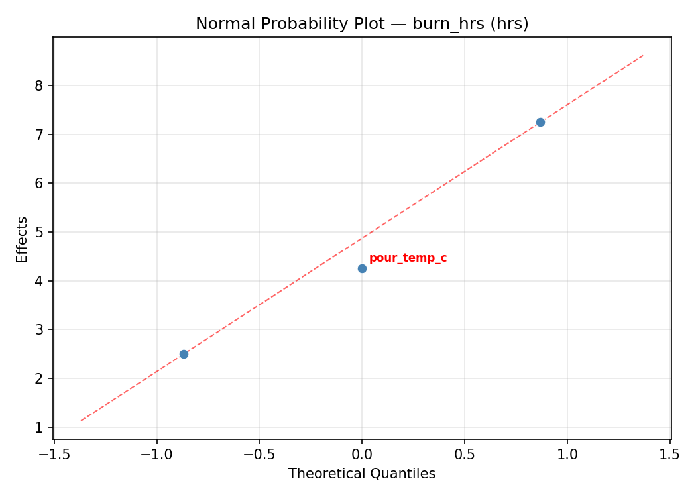
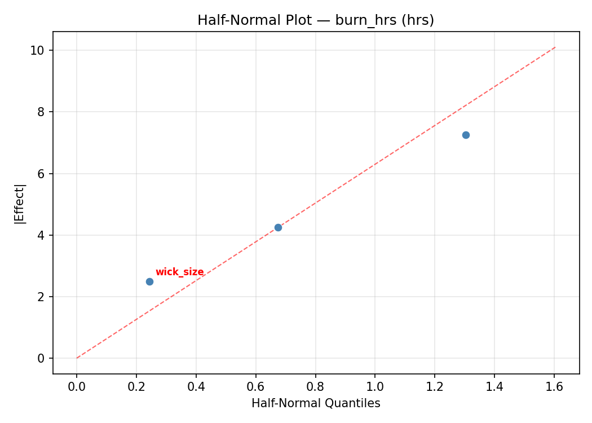
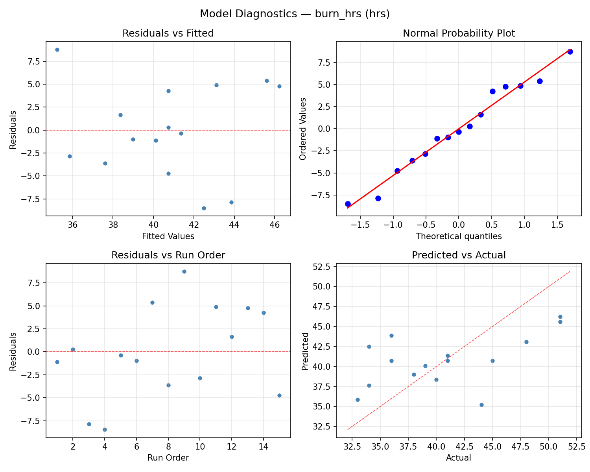
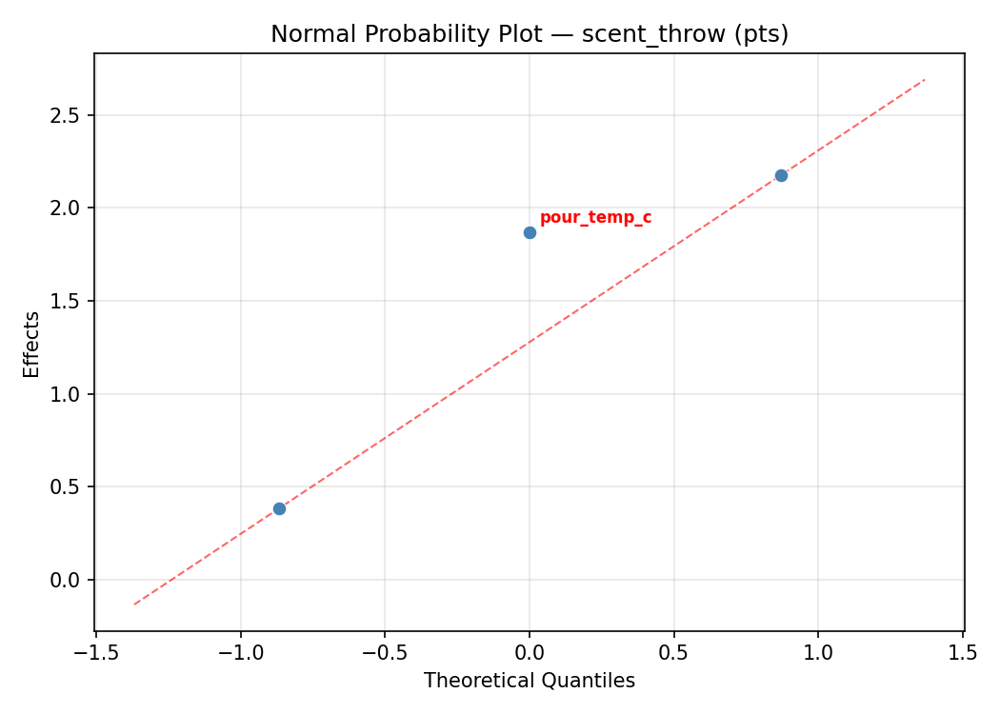
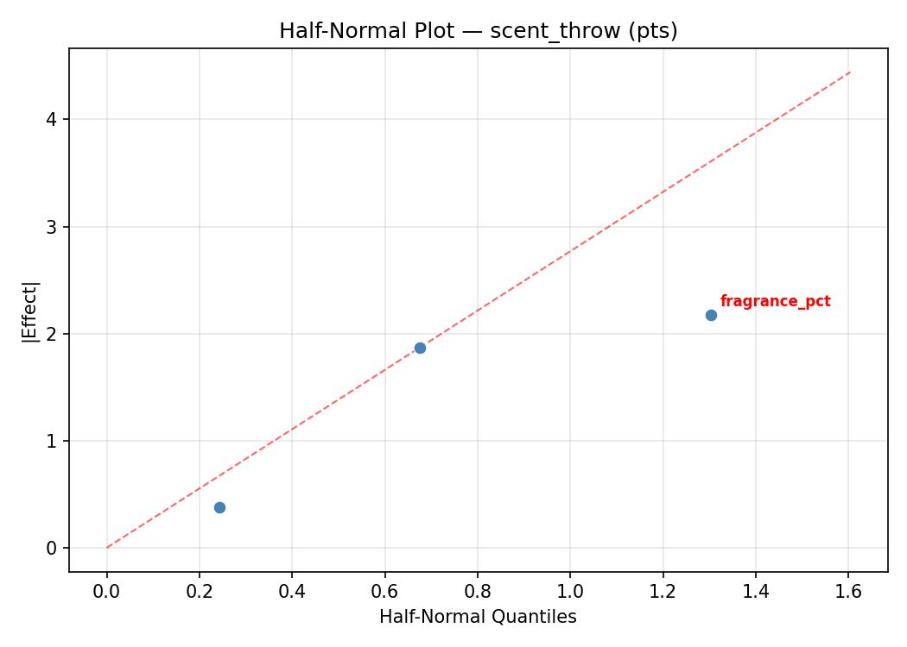
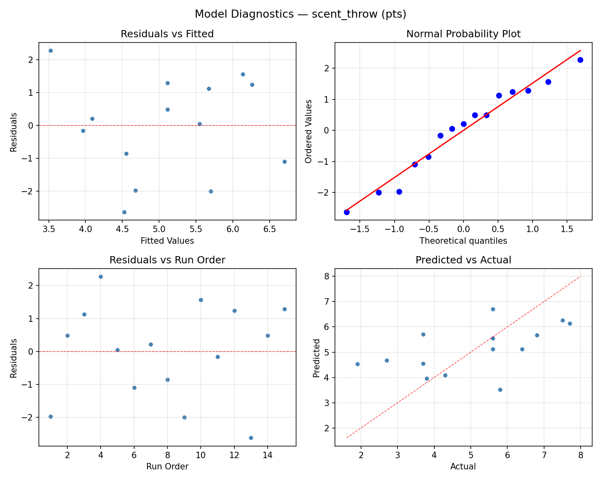

Summary
This experiment investigates candle making optimization. Box-Behnken design to maximize burn time and scent throw by tuning wick size, fragrance load, and pour temperature.
The design varies 3 factors: wick size (mm), ranging from 4 to 10, fragrance pct (%), ranging from 4 to 12, and pour temp c (C), ranging from 55 to 80. The goal is to optimize 2 responses: burn hrs (hrs) (maximize) and scent throw (pts) (maximize). Fixed conditions held constant across all runs include wax type = soy, container = 8oz_jar.
A Box-Behnken design was chosen because it efficiently fits quadratic models with 3 continuous factors while avoiding extreme corner combinations — requiring only 15 runs instead of the 8 needed for a full factorial at two levels.
Quadratic response surface models were fitted to capture potential curvature and factor interactions. The RSM contour plots below visualize how pairs of factors jointly affect each response.
Key Findings
For burn hrs, the most influential factors were wick size (45.9%), pour temp c (29.5%), fragrance pct (24.6%). The best observed value was 51.0 (at wick size = 7, fragrance pct = 12, pour temp c = 80).
For scent throw, the most influential factors were fragrance pct (46.1%), wick size (44.1%), pour temp c (9.8%). The best observed value was 7.7 (at wick size = 7, fragrance pct = 12, pour temp c = 55).
Recommended Next Steps
- Run confirmation experiments at the predicted optimal settings to validate the model.
- Consider whether any fixed factors should be varied in a future study.
Experimental Setup
Factors
| Factor | Low | High | Unit |
|---|
wick_size | 4 | 10 | mm |
fragrance_pct | 4 | 12 | % |
pour_temp_c | 55 | 80 | C |
Fixed: wax_type = soy, container = 8oz_jar
Responses
| Response | Direction | Unit |
|---|
burn_hrs | ↑ maximize | hrs |
scent_throw | ↑ maximize | pts |
Configuration
{
"metadata": {
"name": "Candle Making Optimization",
"description": "Box-Behnken design to maximize burn time and scent throw by tuning wick size, fragrance load, and pour temperature"
},
"factors": [
{
"name": "wick_size",
"levels": [
"4",
"10"
],
"type": "continuous",
"unit": "mm"
},
{
"name": "fragrance_pct",
"levels": [
"4",
"12"
],
"type": "continuous",
"unit": "%"
},
{
"name": "pour_temp_c",
"levels": [
"55",
"80"
],
"type": "continuous",
"unit": "C"
}
],
"fixed_factors": {
"wax_type": "soy",
"container": "8oz_jar"
},
"responses": [
{
"name": "burn_hrs",
"optimize": "maximize",
"unit": "hrs"
},
{
"name": "scent_throw",
"optimize": "maximize",
"unit": "pts"
}
],
"settings": {
"operation": "box_behnken",
"test_script": "use_cases/140_candle_making/sim.sh"
}
}
Experimental Matrix
The Box-Behnken Design produces 15 runs. Each row is one experiment with specific factor settings.
| Run | wick_size | fragrance_pct | pour_temp_c |
|---|
| 1 | 7 | 4 | 55 |
| 2 | 7 | 8 | 67.5 |
| 3 | 10 | 8 | 80 |
| 4 | 10 | 8 | 55 |
| 5 | 7 | 8 | 67.5 |
| 6 | 7 | 8 | 67.5 |
| 7 | 4 | 8 | 80 |
| 8 | 10 | 4 | 67.5 |
| 9 | 7 | 4 | 80 |
| 10 | 10 | 12 | 67.5 |
| 11 | 4 | 8 | 55 |
| 12 | 7 | 12 | 80 |
| 13 | 4 | 4 | 67.5 |
| 14 | 4 | 12 | 67.5 |
| 15 | 7 | 12 | 55 |
Step-by-Step Workflow
1
Preview the design
$ python doe.py info --config use_cases/140_candle_making/config.json
2
Generate the runner script
$ python doe.py generate --config use_cases/140_candle_making/config.json \
--output use_cases/140_candle_making/results/run.sh --seed 42
3
Execute the experiments
$ bash use_cases/140_candle_making/results/run.sh
4
Analyze results
$ python doe.py analyze --config use_cases/140_candle_making/config.json
5
Get optimization recommendations
$ python doe.py optimize --config use_cases/140_candle_making/config.json
6
Multi-objective optimization
With 2 competing responses, use --multi to find the best compromise via Derringer–Suich desirability.
$ python doe.py optimize --config use_cases/140_candle_making/config.json --multi
7
Generate the HTML report
$ python doe.py report --config use_cases/140_candle_making/config.json \
--output use_cases/140_candle_making/results/report.html
Features Exercised
| Feature | Value |
|---|
| Design type | box_behnken |
| Factor types | continuous (all 3) |
| Arg style | double-dash |
| Responses | 2 (burn_hrs ↑, scent_throw ↑) |
| Total runs | 15 |
Analysis Results
Generated from actual experiment runs using the DOE Helper Tool.
Response: burn_hrs
Top factors: wick_size (45.9%), pour_temp_c (29.5%), fragrance_pct (24.6%).
ANOVA
| Source | DF | SS | MS | F | p-value |
|---|
| Source | DF | SS | MS | F | p-value |
| wick_size | 2 | 146.1833 | 73.0917 | 10.442 | 0.0059 |
| fragrance_pct | 2 | 30.3262 | 15.1631 | 2.166 | 0.1771 |
| pour_temp_c | 2 | 51.9333 | 25.9667 | 3.710 | 0.0725 |
| Lack | of | Fit | 6 | 256.4905 | 42.7484 |
| Pure | Error | 2 | 14.0000 | | |
| Error | 8 | 270.4905 | 7.0000 | | |
| Total | 14 | 498.9333 | 35.6381 | | |
Pareto Chart

Main Effects Plot

Normal Probability Plot of Effects

Half-Normal Plot of Effects

Model Diagnostics

Response: scent_throw
Top factors: fragrance_pct (46.1%), wick_size (44.1%), pour_temp_c (9.8%).
ANOVA
| Source | DF | SS | MS | F | p-value |
|---|
| Source | DF | SS | MS | F | p-value |
| wick_size | 2 | 4.8198 | 2.4099 | 0.668 | 0.5394 |
| fragrance_pct | 2 | 7.3827 | 3.6913 | 1.023 | 0.4023 |
| pour_temp_c | 2 | 0.3138 | 0.1569 | 0.043 | 0.9577 |
| Lack | of | Fit | 6 | 21.1010 | 3.5168 |
| Pure | Error | 2 | 7.2200 | | |
| Error | 8 | 28.3210 | 3.6100 | | |
| Total | 14 | 40.8373 | 2.9170 | | |
Pareto Chart

Main Effects Plot

Normal Probability Plot of Effects

Half-Normal Plot of Effects

Model Diagnostics

Response Surface Plots
3D surfaces fitted with quadratic RSM. Red dots are observed data points.
burn hrs fragrance pct vs pour temp c

burn hrs wick size vs fragrance pct

burn hrs wick size vs pour temp c

scent throw fragrance pct vs pour temp c

scent throw wick size vs fragrance pct

scent throw wick size vs pour temp c

Multi-Objective Optimization
When responses compete, Derringer–Suich desirability finds the best compromise.
Each response is scaled to a 0–1 desirability, then combined via a weighted geometric mean.
Overall Desirability
D = 0.8204
Per-Response Desirability
| Response | Weight | Desirability | Predicted | Dir |
|---|
burn_hrs |
1.0 |
|
44.31 0.6166 44.31 hrs |
↑ |
scent_throw |
1.5 |
|
7.94 0.9924 7.94 pts |
↑ |
Recommended Settings
| Factor | Value |
|---|
wick_size | 10 mm |
fragrance_pct | 11.2 % |
pour_temp_c | 55 C |
Source: from RSM model prediction
Trade-off Summary
Sacrifice = how much worse than single-objective best.
| Response | Predicted | Best Observed | Sacrifice |
|---|
scent_throw | 7.94 | 7.70 | -0.24 |
Top 3 Runs by Desirability
| Run | D | Factor Settings |
|---|
| #14 | 0.6357 | wick_size=10, fragrance_pct=8, pour_temp_c=55 |
| #7 | 0.5846 | wick_size=7, fragrance_pct=8, pour_temp_c=67.5 |
Model Quality
| Response | R² | Type |
|---|
scent_throw | 0.9330 | quadratic |
Full Multi-Objective Output
============================================================
MULTI-OBJECTIVE OPTIMIZATION
Method: Derringer-Suich Desirability Function
============================================================
Overall desirability: D = 0.8204
Response Weight Desirability Predicted Direction
---------------------------------------------------------------------
burn_hrs 1.0 0.6166 44.31 hrs ↑
scent_throw 1.5 0.9924 7.94 pts ↑
Recommended settings:
wick_size = 10 mm
fragrance_pct = 11.2 %
pour_temp_c = 55 C
(from RSM model prediction)
Trade-off summary:
burn_hrs: 44.31 (best observed: 51.00, sacrifice: +6.69)
scent_throw: 7.94 (best observed: 7.70, sacrifice: -0.24)
Model quality:
burn_hrs: R² = 0.2611 (linear)
scent_throw: R² = 0.9330 (quadratic)
Top 3 observed runs by overall desirability:
1. Run #12 (D=0.6600): wick_size=4, fragrance_pct=12, pour_temp_c=67.5
2. Run #14 (D=0.6357): wick_size=10, fragrance_pct=8, pour_temp_c=55
3. Run #7 (D=0.5846): wick_size=7, fragrance_pct=8, pour_temp_c=67.5
Full Analysis Output
=== Main Effects: burn_hrs ===
Factor Effect Std Error % Contribution
--------------------------------------------------------------
wick_size 7.0000 1.5414 45.9%
pour_temp_c 4.5000 1.5414 29.5%
fragrance_pct 3.7500 1.5414 24.6%
=== ANOVA Table: burn_hrs ===
Source DF SS MS F p-value
-----------------------------------------------------------------------------
wick_size 2 146.1833 73.0917 10.442 0.0059
fragrance_pct 2 30.3262 15.1631 2.166 0.1771
pour_temp_c 2 51.9333 25.9667 3.710 0.0725
Lack of Fit 6 256.4905 42.7484 6.107 0.1474
Pure Error 2 14.0000 7.0000
Error 8 270.4905 7.0000
Total 14 498.9333 35.6381
=== Summary Statistics: burn_hrs ===
wick_size:
Level N Mean Std Min Max
------------------------------------------------------------
10 4 37.0000 3.5590 34.0000 41.0000
4 4 38.7500 6.5000 33.0000 48.0000
7 7 44.0000 5.5976 36.0000 51.0000
fragrance_pct:
Level N Mean Std Min Max
------------------------------------------------------------
12 4 42.2500 5.9652 38.0000 51.0000
4 4 38.5000 8.4261 33.0000 51.0000
8 7 41.1429 4.9809 34.0000 48.0000
pour_temp_c:
Level N Mean Std Min Max
------------------------------------------------------------
55 4 43.5000 7.5939 34.0000 51.0000
67.5 7 39.0000 4.5461 33.0000 45.0000
80 4 41.0000 7.0711 36.0000 51.0000
=== Main Effects: scent_throw ===
Factor Effect Std Error % Contribution
--------------------------------------------------------------
fragrance_pct 1.5929 0.4410 46.1%
wick_size 1.5250 0.4410 44.1%
pour_temp_c 0.3393 0.4410 9.8%
=== ANOVA Table: scent_throw ===
Source DF SS MS F p-value
-----------------------------------------------------------------------------
wick_size 2 4.8198 2.4099 0.668 0.5394
fragrance_pct 2 7.3827 3.6913 1.023 0.4023
pour_temp_c 2 0.3138 0.1569 0.043 0.9577
Lack of Fit 6 21.1010 3.5168 0.974 0.5864
Pure Error 2 7.2200 3.6100
Error 8 28.3210 3.6100
Total 14 40.8373 2.9170
=== Summary Statistics: scent_throw ===
wick_size:
Level N Mean Std Min Max
------------------------------------------------------------
10 4 4.4500 1.5022 2.7000 5.8000
4 4 5.9750 1.6860 3.8000 7.7000
7 7 5.0000 1.8583 1.9000 7.5000
fragrance_pct:
Level N Mean Std Min Max
------------------------------------------------------------
12 4 3.9500 1.9330 1.9000 5.6000
4 4 5.5250 1.8554 3.7000 7.7000
8 7 5.5429 1.4093 3.7000 7.5000
pour_temp_c:
Level N Mean Std Min Max
------------------------------------------------------------
55 4 4.8750 0.9777 3.8000 5.8000
67.5 7 5.2143 1.9412 2.7000 7.7000
80 4 5.1750 2.2396 1.9000 6.8000
Optimization Recommendations
=== Optimization: burn_hrs ===
Direction: maximize
Best observed run: #7
wick_size = 7
fragrance_pct = 12
pour_temp_c = 80
Value: 51.0
RSM Model (linear, R² = 0.5216, Adj R² = 0.3911):
Coefficients:
intercept +40.7333
wick_size +0.6250
fragrance_pct +1.3750
pour_temp_c +5.5000
RSM Model (quadratic, R² = 0.7266, Adj R² = 0.2344):
Coefficients:
intercept +37.6667
wick_size +0.6250
fragrance_pct +1.3750
pour_temp_c +5.5000
wick_size*fragrance_pct +1.0000
wick_size*pour_temp_c -1.2500
fragrance_pct*pour_temp_c +0.7500
wick_size^2 +0.6667
fragrance_pct^2 +0.1667
pour_temp_c^2 +4.9167
Curvature analysis:
pour_temp_c coef=+4.9167 convex (has a minimum)
wick_size coef=+0.6667 convex (has a minimum)
fragrance_pct coef=+0.1667 convex (has a minimum)
Notable interactions:
wick_size*pour_temp_c coef=-1.2500 (antagonistic)
wick_size*fragrance_pct coef=+1.0000 (synergistic)
fragrance_pct*pour_temp_c coef=+0.7500 (synergistic)
Predicted optimum (from linear model, at observed points):
wick_size = 7
fragrance_pct = 12
pour_temp_c = 80
Predicted value: 47.6083
Surface optimum (via L-BFGS-B, linear model):
wick_size = 10
fragrance_pct = 12
pour_temp_c = 80
Predicted value: 48.2333
Model quality: Moderate fit — use predictions directionally, not precisely.
Factor importance:
1. pour_temp_c (effect: 11.0, contribution: 73.3%)
2. fragrance_pct (effect: 2.8, contribution: 18.3%)
3. wick_size (effect: 1.2, contribution: 8.3%)
=== Optimization: scent_throw ===
Direction: maximize
Best observed run: #10
wick_size = 7
fragrance_pct = 12
pour_temp_c = 55
Value: 7.7
RSM Model (linear, R² = 0.6137, Adj R² = 0.5084):
Coefficients:
intercept +5.1133
wick_size +0.5000
fragrance_pct +0.1875
pour_temp_c -1.6875
RSM Model (quadratic, R² = 0.6807, Adj R² = 0.1060):
Coefficients:
intercept +5.6667
wick_size +0.5000
fragrance_pct +0.1875
pour_temp_c -1.6875
wick_size*fragrance_pct -0.0500
wick_size*pour_temp_c +0.4500
fragrance_pct*pour_temp_c +0.2750
wick_size^2 -0.4458
fragrance_pct^2 -0.5208
pour_temp_c^2 -0.0708
Curvature analysis:
fragrance_pct coef=-0.5208 concave (has a maximum)
wick_size coef=-0.4458 concave (has a maximum)
pour_temp_c coef=-0.0708 negligible curvature
Notable interactions:
wick_size*pour_temp_c coef=+0.4500 (synergistic)
Predicted optimum (from linear model, at observed points):
wick_size = 10
fragrance_pct = 8
pour_temp_c = 55
Predicted value: 7.3008
Surface optimum (via L-BFGS-B, linear model):
wick_size = 10
fragrance_pct = 12
pour_temp_c = 55
Predicted value: 7.4883
Model quality: Moderate fit — use predictions directionally, not precisely.
Factor importance:
1. pour_temp_c (effect: 3.4, contribution: 66.9%)
2. wick_size (effect: 1.0, contribution: 19.8%)
3. fragrance_pct (effect: 0.7, contribution: 13.3%)